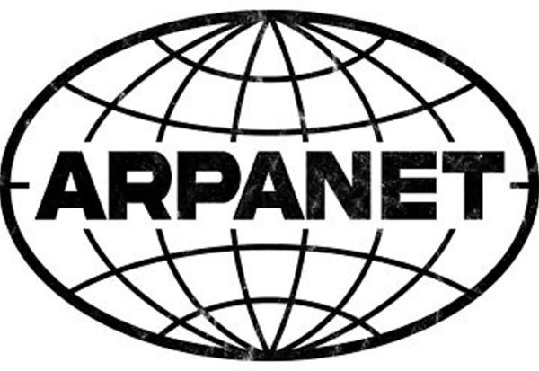

1969: El nacimiento de ARPANET
Se crea ARPANET, la red que dará origen a Internet.
Se crea ARPANET, la red que dará origen a Internet.

Se envía el primer correo electrónico.

Se establece el protocolo TCP/IP como estándar para la comunicación en Internet.

Se registra www.symbolics.com, marcando el inicio de los dominios comerciales.
Tim Berners-Lee inventa la World Wide Web, revolucionando el acceso a la información en Internet.

Lanzamiento del primer navegador web gráfico, haciendo Internet accesible al público.

Fundación de Amazon, impulsando el comercio online.

Nace el motor de búsqueda que cambiaría el acceso a la información.
Lanzamiento de la enciclopedia libre y colaborativa.

Mark Zuckerberg lanza Facebook, revolucionando las redes sociales.
Apple lanza el iPhone, transformando la forma en que accedemos a Internet.
Nace Spotify, popularizando el formato streaming.

Lanzamiento de ChatGPT, marcando el inicio de la integración de inteligencia artificial.